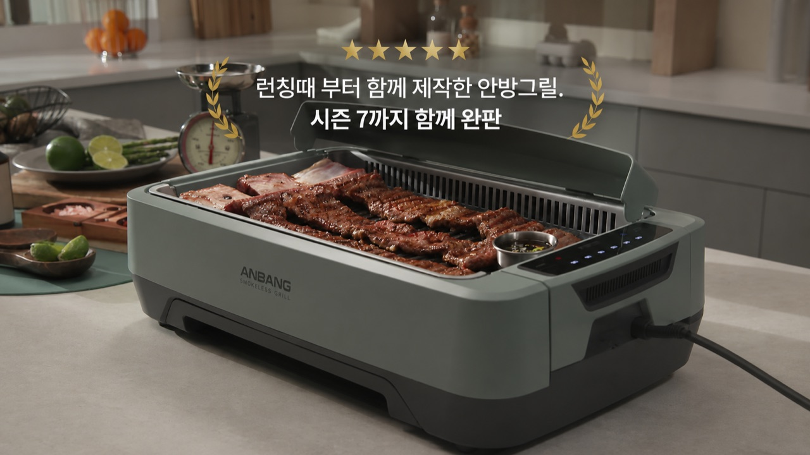
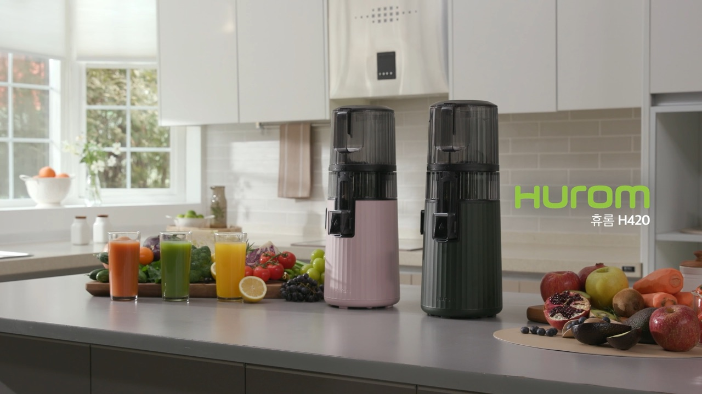

문제 상황 제시
연기, 기름 튐, 조리 시간, 손질 번거로움처럼 고객이 이미 느끼는 불편함을 먼저 보여줍니다.
전기그릴, 팬, 블렌더, 착즙기, 조리 가전, 주방용품까지. 제품의 사용 편의성, 조리 결과, 세척 장면, 비교 테스트를 홈쇼핑 인서트 흐름에 맞춰 설계합니다.
마이다스는 제품의 기능을 말로 설명하기보다, 조리 과정과 완성 결과, 사용 전후 차이로 빠르게 이해시키는 홈쇼핑 인서트 영상을 제작합니다.
홈쇼핑·세일즈 영상 제작 경험
안방그릴 누적 매출 판매 성과
전 홈쇼핑 17개 채널 경험
일산 종합촬영센터 기반 촬영
좋은 주방가전 인서트는 음식만 예쁘게 보여주지 않습니다. 조작이 쉬운지, 결과가 좋은지, 세척이 편한지, 기존 방식보다 왜 나은지까지 한 흐름으로 보여줍니다.
연기, 기름 튐, 조리 시간, 손질 번거로움처럼 고객이 이미 느끼는 불편함을 먼저 보여줍니다.
재료 준비, 작동 방식, 조리 과정, 완성 컷을 제품의 핵심 기능과 연결해 촬영합니다.
기존 조리 방식, 타 제품, 사용 전후 차이를 같은 기준에서 보여줘 구매 판단을 돕습니다.
조리 후 세척, 분리, 보관, 가족 사용 장면까지 이어서 실제 생활 속 편의성을 전달합니다.
주방가전은 재료, 조리법, 모델 동선, 세트와 소품 준비가 중요합니다. 제작 전 구성안에서 필요한 컷을 먼저 설계합니다.
연기 저감, 기름 배출, 굽기 결과, 가족 식사 장면을 중심으로 구성합니다.
원물, 작동 속도, 질감, 건강한 섭취 장면을 푸드 스타일링과 함께 보여줍니다.
조리 전후, 시간 절약, 완성도, 다양한 레시피 활용 장면을 설계합니다.
간편 조리, 바삭함, 기름 사용 감소, 아이 간식과 홈파티 컷을 연결합니다.
오염, 세척 전후, 위생, 건조와 보관까지 생활 문제 해결 흐름으로 구성합니다.
손질, 절단, 보관, 반복 사용 장면을 빠르게 보여줘 편의성을 강조합니다.
제품 기능이 드러나는 재료와 완성 컷을 준비해 맛과 성능을 함께 전달합니다.
조리 과정과 완성 컷을 후킹 소재로 뽑아 쇼츠, 릴스, 광고용으로 확장합니다.
공개 가능한 영상은 성공사례 페이지에서 확인할 수 있습니다. 비공개 샘플은 제품군과 판매 채널을 알려주시면 상담 시 맞춰 공유드립니다.

연기 저감, 조리 실연, 사용 편의성을 방송 흐름에 맞춰 구성
주방가전 · 홈쇼핑 인서트조리와 생활 편의성을 빠르게 보여준 주방가전 판매 영상
주방가전 · 생활가전
원물, 착즙 과정, 건강한 브랜드 이미지를 연결한 인서트
주방가전 · 건강 콘셉트
조리 실연, 푸드 스타일링, 제품 디테일 컷을 한 공간에서 촬영
일산 촬영센터 · 주방 세트건강기능식품과 푸드 컷처럼 결과 이미지를 짧고 강하게 전달
푸드 연출 · 제품 인서트일산 3,000평 마이다스종합촬영센터의 주방 세트와 리빙 공간을 활용해 조리 과정, 가족 식사 장면, 제품 디테일, 세척 컷까지 한 번에 연결합니다.
주방가전 영상은 촬영 당일보다 촬영 전 준비가 중요합니다. 어떤 재료로 어떤 기능을 보여줄지, 조리 결과가 어떻게 보여야 하는지부터 정리합니다.
핵심 기능, USP, 조리 방식, 시험자료, 판매 채널, 경쟁 제품을 확인합니다.
기능이 잘 보이는 재료와 조리 순서, 비교 컷, 완성 컷을 구성안으로 정리합니다.
주방 세트, 그릇, 조리도구, 재료, 푸드 스타일링 범위를 준비합니다.
제품 작동, 조리 과정, 모델 사용, 디테일, 세척과 보관 장면을 촬영합니다.
쇼호스트 멘트와 판매 흐름에 맞춰 자막, CG, 사운드, 색보정을 진행합니다.
TV홈쇼핑, 유튜브, 상세페이지, 쇼츠·릴스용 파일로 정리합니다.
정확한 견적은 촬영 일수, 모델·세트·푸드 스타일링·그래픽 범위, 납품 채널에 따라 달라집니다. 예산대와 일정에 맞춰 가장 효율적인 구성을 제안드립니다.
주방가전 촬영 소스는 TV홈쇼핑뿐 아니라 상세페이지, SNS 광고, 숏폼, 라이브커머스 예고 콘텐츠로 반복 활용할 수 있습니다.
조리 과정과 구매 이유를 방송 흐름에 맞춰 압축한 메인 영상
제품 기능, 조리 결과, 디테일 컷을 온라인 판매 페이지에 맞춰 활용
조리 전후, 완성 컷, 세척 장면을 짧은 후킹 소재로 편집
인서트 소스를 라이브 방송 예고, 중간 삽입 영상, 숏폼으로 확장
제품 설명서와 판매 채널만 있어도 제작 범위부터 잡을 수 있습니다. 레시피나 푸드 스타일링이 필요한 경우도 함께 정리해드립니다.
가능합니다. 제품 기능이 잘 보이는 조리 메뉴와 재료, 소품 범위를 제작 전에 함께 정리합니다.
간단한 제품 실연은 1일 촬영으로 가능한 경우가 많습니다. 레시피 수, 모델 컷, 세척 장면, 완성 컷이 많으면 추가 촬영일이 필요할 수 있습니다.
가능합니다. 비교 기준과 표현 범위는 방송 심의와 제품 근거를 함께 확인해 구성합니다.
가능합니다. 조리 과정, 완성 컷, 세척 장면은 쇼츠와 릴스 소재로 활용도가 높아 촬영 단계부터 세로형 재가공을 고려할 수 있습니다.
주방가전 실연 영상은 홈쇼핑 인서트, 촬영센터, 라이브커머스, 숏폼 제작과 함께 연결하면 활용도가 커집니다.
제품군, 판매 채널, 예산, 일정이 정해져 있지 않아도 괜찮습니다. 현재 상황을 기준으로 주방가전 제품 실연 영상 제작 범위를 제안드립니다.